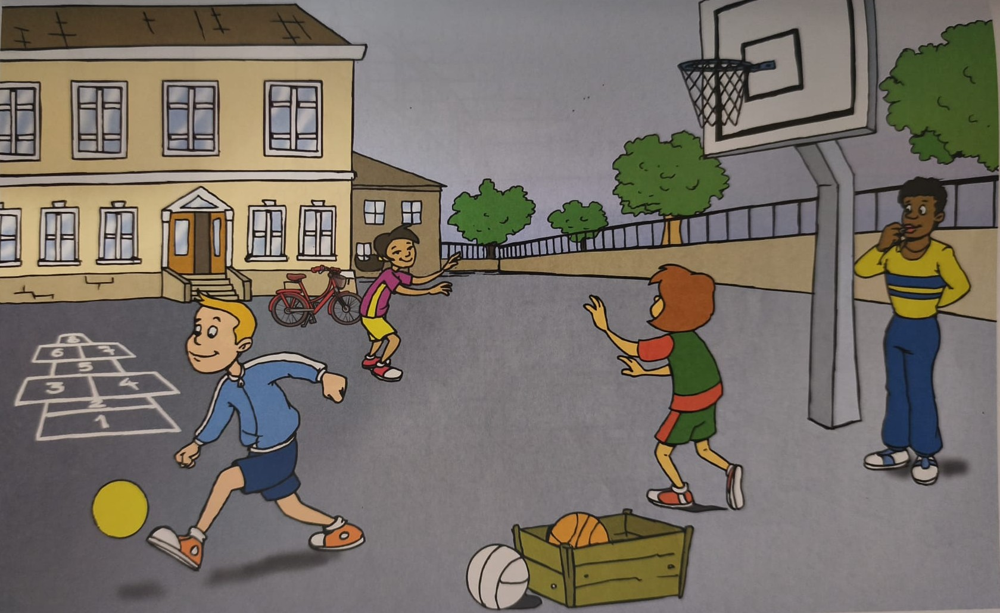

🔍
Cambridge Speaking Practice
Children 2 – Scene Card
💡
Cómo funciona:
Pulsa la 🔍 para ampliar la imagen. Pulsa 🔊 para escuchar la pregunta. Para contestar usa el 🎤 o escribe tu respuesta. Pulsa 🤖 pata corregir tu respuesta con IA. Pulsa ⭐ para mostrar otras posibles respuestas.
Pregunta 1 / 30
🔊 Escuchar Pregunta
What is the teacher doing?
SHOW
🎤
🤖 Corregir con IA
⭐ Ver respuestas
Evaluación
...
Entendido